Blending colors using
gradient meshes allows you to add subtle details to your artwork. with
meshes, you can create interesting details that suggest changes in
illumination, shadowing, or texturing on an otherwise smooth surface.
This particular tutorial is the second of a three-part chapter. As with
the previous tutorial, Tutorial 13A, there are a lot of pictures. Let them
guide you as you learn the finer aspects of mesh gradient manipulation.
Be comfortable using the Undo function. It makes it very easy to
retrace your steps if something doesn’t look the way it should. Do take
breaks! Working with this kind of cyber-magic can make time pass unbelievably
quickly.
In this tutorial, you’ll learn how to do the following:
Edit a mesh grid.
Apply colors to a mesh.
Move a group of mesh points to relocate a patch of color.
Getting Started
In this tutorial, you’ll continue working the art file that you began
in the previous tutorial.
Start Inkscape if you exited it.
Download file Tutorial13B_end.svg and store
it in a convenient location on your computer. Note that the file image might
look like there are wing parts missing when viewing it in its Internet
source location. There are wing parts — you might just be
experiencing an incompatibility between the viewing software in your
browser and the flavor of svg (scalable vector graphics) that
Inkscape uses. Choose File > Open, and open the
Tutorial13B_end.svg file. The missing wing parts should appear
(along with everything else in the file).
If you like, choose View > Zoom > Zoom Out to make the
finished artwork smaller, adjust the window size, and leave it on your
screen as you work. If you don’t want to leave the image open,
choose File > Close.
To begin working, File > Open file Butterfly.svg, which
you worked on in Tutorial 13A. If, however, you did not create
Butterfly.svg, then download file Tutorial13B_start.svg and store
it in a convenient location on your computer. Choose File > Open to open
it.
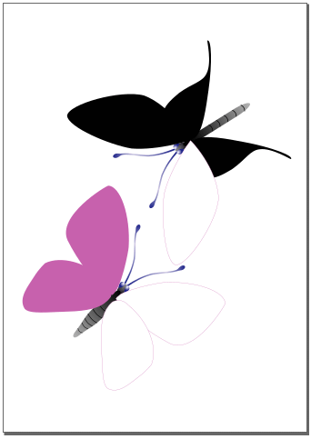
Start file for Tutorial 13B.
Choose File > Save As…, name the file Butterfly.svg,
and store it in a convenient location.
Specifying the Number of Mesh Lines in a Mesh Grid
When you use the Mesh tool to create a new gradient mesh, two intersecting
mesh lines are created for every mesh point you create. Before creating a mesh
grid, you’ll specify its number of mesh lines using the Create and
edit meshes tool (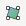).
Select the Select tool () in the toolbox, and click the
black right forewing on the top butterfly to select it.
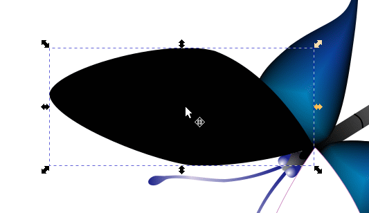
Selecting the black right forewing.
Click on the Create and edit meshes tool (). The Mesh Tool Controls Bar appears.
Set the number of rows to 3 and the number of columns to
4.
Choose Objects > Fill and Stroke… and click the Fill
tab, and click on the Mesh gradient icon ().
The default gradient mesh appears in the selected forewing. Default meshes
typically appear as a black-and-white checkerboard pattern that you color
and modify through the mesh points and mesh handles.
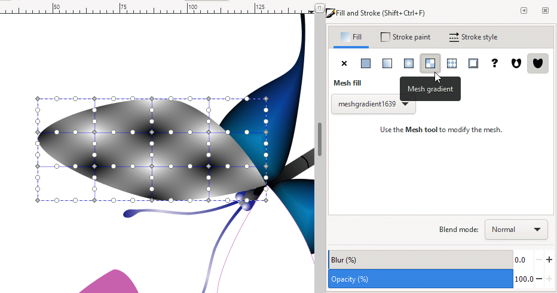
Creating a three row by four column gradient
grid.
You will now apply a purple color to four left-hand mesh points.
You can colorize groups of mesh points easily by group-selecting them
with the Create meshes tool (). With the Create meshes tool still active,
<Shift>-drag the Mesh tool cursor (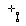) over
the four mesh points as if you were using the Node tool.
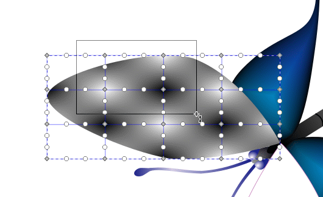
Group-selecting four mesh points.
Release the mouse button. Note that the selected mesh points are now
blue in color, indicating that they have been selected, and that their
associated mesh handles are now arrows pointing in toward their respective
mesh points.
Choose Objects > Fill and Stroke…, click on the Fill
tab, and type 0482bcff into the RGBA text box. Press
<Enter> to apply a purple color to the selected mesh points.
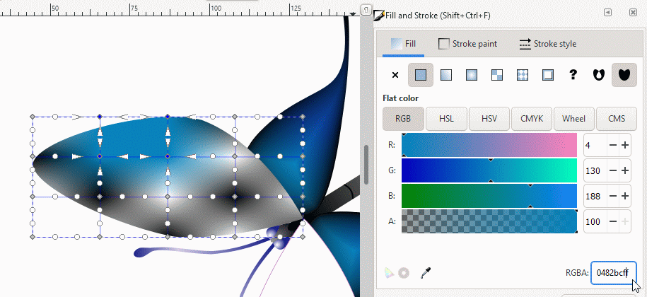
Coloring the group-selected mesh points.
Now group-select the two mesh points immediately below the purple
patch using <Shift>-drag with the Mesh tool cursor ().
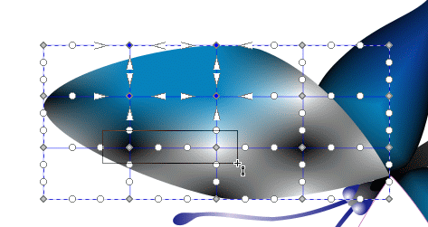
Group-selecting two lower mesh points.
Type 0c429cff into the RGBA text box. Press
<Enter> to apply a deeper shade of purple to the selected mesh
points.
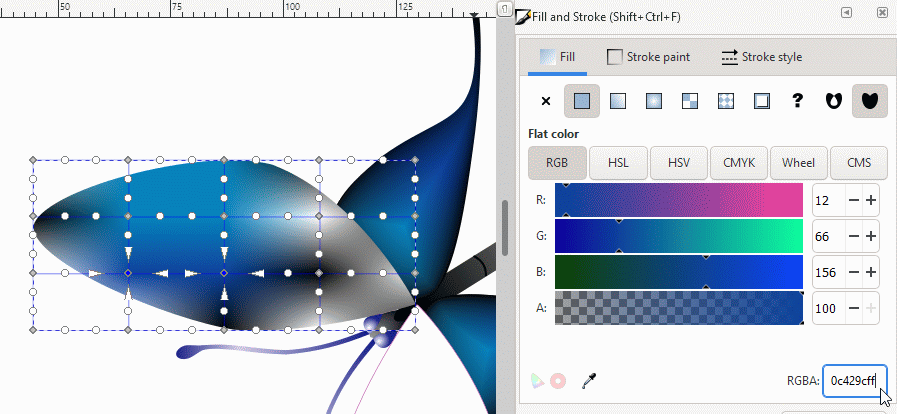
Coloring the two lower mesh points.
Group-select the two mesh points to the right of the earlier patch
of purple using <Shift>-drag with the Mesh tool cursor (). Color them with another shade of purple using RGBA =
14027cff.
Coloring two right-hand mesh points.
You will now start creating black edging to the forewing.
With the Mesh tool cursor () still active, <Shift>-drag
around the edge of the mesh grid to select only the outer mesh points.
Note that now only the outer mesh points are colored blue and that their
mesh handles are now arrows. The internal mesh points are not highlighted
and their mesh handles are circles.
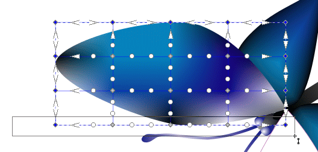
Group-selecting the outer mesh points.
Click on the black swatch in the Color palette at the bottom of the
work window to set all outer mesh points to black.
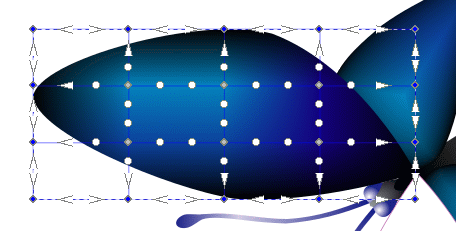
Putting black edging on the forewing.
You will be moving mesh points around to have the grid conform to
the shape of the wing. To prepare, move all mesh handles in close to their
associated mesh points for easier visual management.
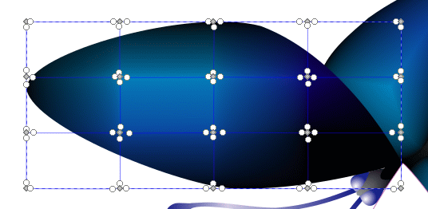
Moving mesh handles in prior to moving.
Move the outer mesh points in until they just touch the edge of the
wing or lie just outside the shape.
Move the inner mesh points to create mesh lines that roughly align with
the shape of the wing. Move mesh handles out as you see fit to bring color
to the edges of the wing but not totally removing the black edging. How you
do this is up to you and how you feel or think the different patches of
color should look.
Editing the forewing gradient grid.
File > Save.
Highlighting Using a Mesh
To give an object a three-dimensional appearance, you can create a gradient
mesh that highlights the center or the edge of an object. Now you’ll
create a 3 &mult; 3 mesh with highlighting.
Scroll down the artboard to bring the second butterfly to the center
of the work window.
With the Select tool (), click the top forewing on the pink
butterfly to select it.
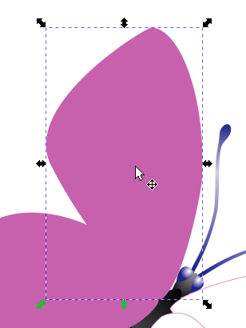
Selecting the forewing.
Click on the Create meshes tool ().
In the Mesh Tool Controls Bar that appears, leave 3
entered in the Rows text box. Type 3 in the Columns text
box.
Choose Objects > Fill and Stroke…, click on the Fill
tab, click on the Mesh gradient icon (). A
mesh grid encloses the wing.
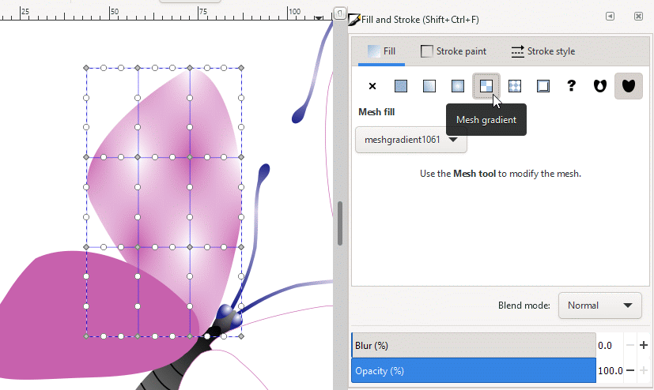
Creating the forewing mesh grid.
You will shortly move the edge mesh points so they conform with the
shape of the forewing. Before you move them, group the mesh handles in so
they are in close proximity to their respective mesh points.
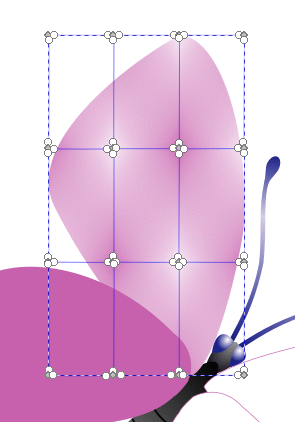
Grouping mesh points and mesh handles together prior to
moving.
Move the edge mesh points to the edges of the wing. Make sure they
don’t enter into the wing itself, otherwise portions of the edge might
be cut off. Adjust points and handles so you achieve curves that mimic the
external geometry of the wing. There will be times when it helps to magnify
the area you are working on to separate points and handles more easily, or
place points and handles with the precision you want.
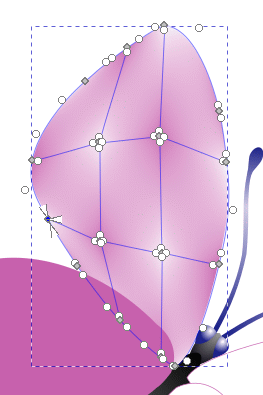
Moving mesh points and mesh handle groups to conform to
the wing geometry.
If you want to work on an area that lies underneath another object,
switching to Outline View is a great feature to can help you
visualize mesh lines and figure outlines more easily. Go back to Normal
View when you are done.
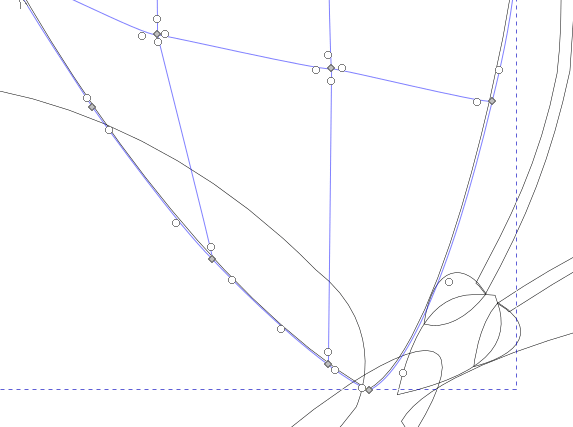
Moving the lower hidden mesh points and mesh
handle groups using Outline View to conform to the wing
geometry.
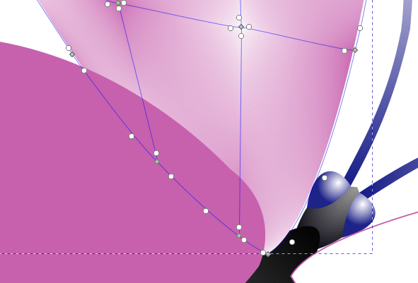
Result in Normal View.
You will now put an edging color on the wing. <Shift>-drag to
select only those mesh points situated along the wing edge. If you encounter
instances when points don’t select, then <Shift>-click points
individually to add them to the group you’re creating. Blue point
highlighting and mesh handles turning from circles into arrows are the
indicators that inform you on how you’re doing.
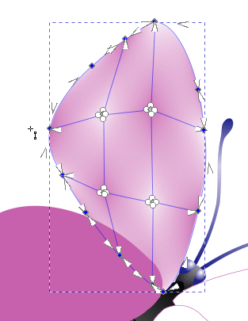
Group-selecting edge mesh points prior to
group-coloring.
With the edge mesh points selected, choose Objects > Fill and
Stroke…, the Fill tab, and click on the Mesh gradient
icon (), and type 14027cff into the RGBA text box.
Press <Enter> to apply a deep purple color to the selected mesh
points.
Now move the four inner mesh points out individually to expand the
central color patch, group-select them using <Shift>-drag, and, if
the Fill and Stroke panel is still open, click on the HSL icon
(Hue, Saturation, Lightness) in
the Fill panel.
To make the central wing area highlighted, you will lighten its overall
color. Set H = 315, S = 46, L = 90, and A = 100.
The central color patch lightens up.
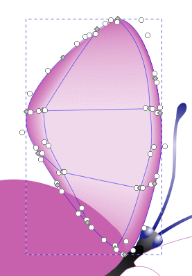
Setting the color on the edge mesh points and moving
inner mesh points toward the edges to make the border color
narrow.
You’ll now give the wing tip a deeper purple color.
Group-select the four consecutive edge mesh points from the left side up to
the tip. Type 14027cff into the RGBA text box in the
Fill panel.
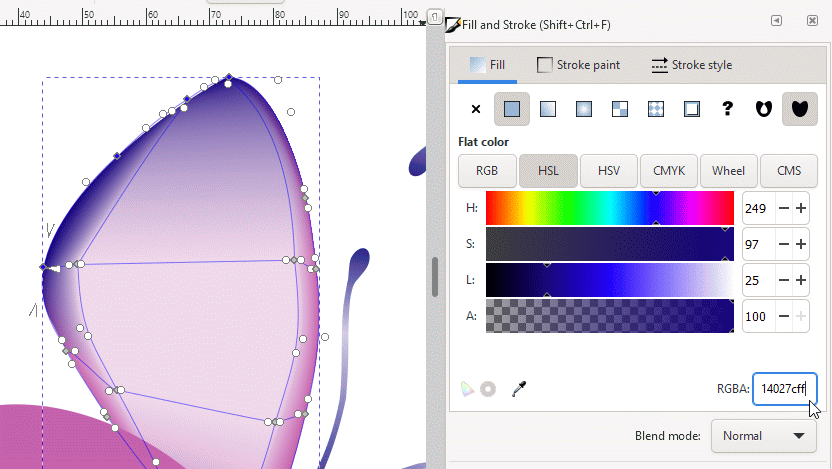
Setting the color on the four top edge mesh points to a
deeper shade of purple.
The wing tip should have more deep purple. Move the inside handles of
the three uppermost edge points to give the deep purple color path more
width. Let your own taste determine how far you want to move mesh
handles.
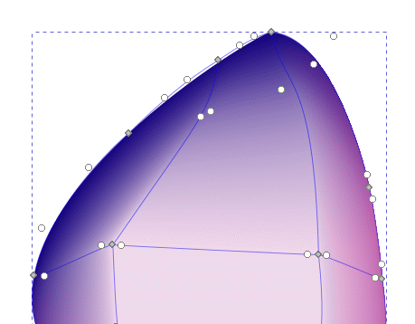
Adjusting the spread of the deeper purple mesh
patch.
Adjust mesh points and handles further to blend colors to your
satisfaction.
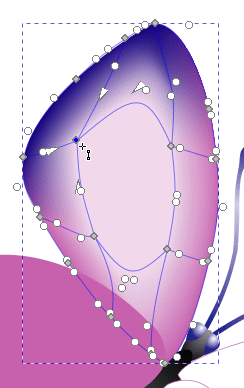
Adjusting the spread of the inner highlight mesh
patch.
There are two smoothing algorithms available for you to experiment
with. There is the Coons algorithm and the Bicubic algorithm.
The Coons algorithm can produce abrupt changes in color between color patch
borders. The bicubic algorithm spreads color changes out over greater
distances, significantly reducing the rate of color change and color
banding. The decision of which algorithm to use depends upon your taste in
coloration. They are available in the Mesh Tool Controls Bar.
The two figures below use the same gradient grid but different
algorithms.
You have now given the center of the wing highlighting.
Editing Mesh Points
You can use the Mesh tool to select and add mesh points to change the way
colors blend in a gradient mesh. Every mesh point has a set of direction
handles that let you adjust the distance and direction that a color blends
with neighboring colors in the mesh grid.
In this section, you’ll use the Mesh tool to create a mesh point in
the tail wing on the butterfly and then change the direction in which the
color of the mesh point blends from the corner.
Click on the Create meshes tool () in the toolbox. Give the mesh 2 rows and 2
columns. Then, double-click in the left tail wing of the butterfly. A 2
× 2 grid appears encompassing the wing.
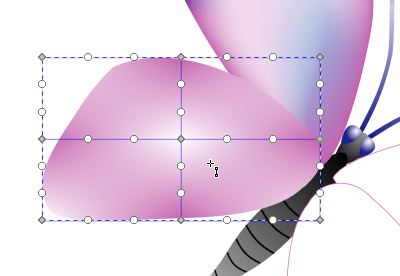
Creating a 2 × 2 gradient mesh.
Move all the mesh handles in toward their respective mesh points.
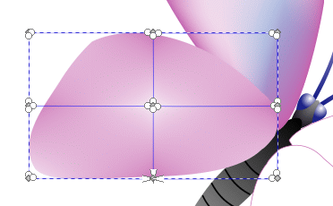
Moving all the mesh handles in toward their respective
mesh points.
Group-select all the mesh points on the wing using
<Shift>-drag with the Mesh tool cursor () (as if
you were using the Select tool to group-select). All mesh points turn blue
and all mesh handles change from circles into arrows.
Color all mesh points pink by typing c462acff into the RGBA
text box in the Fill subpanel of the Fill and Stroke
panel. The entire wing turns pink.
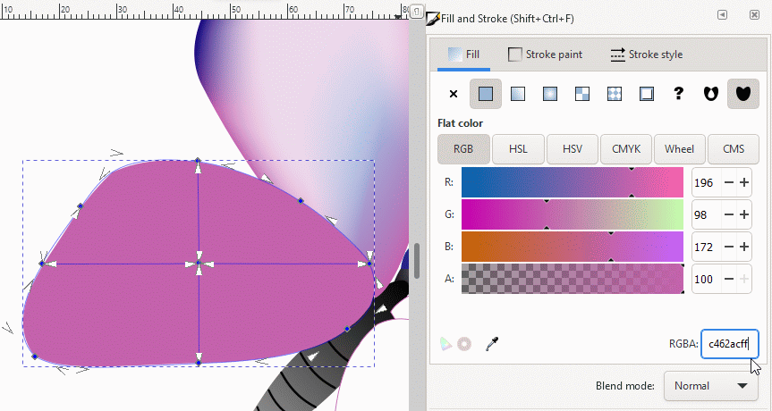
Group-selecting all mesh points and handles.
Click on the central mesh point to keep it selected while deselecting
all other mesh points.
Type a4a6d4ff into the RGBA text box to give the wing a
central highlight. Press <Enter> to set the color.
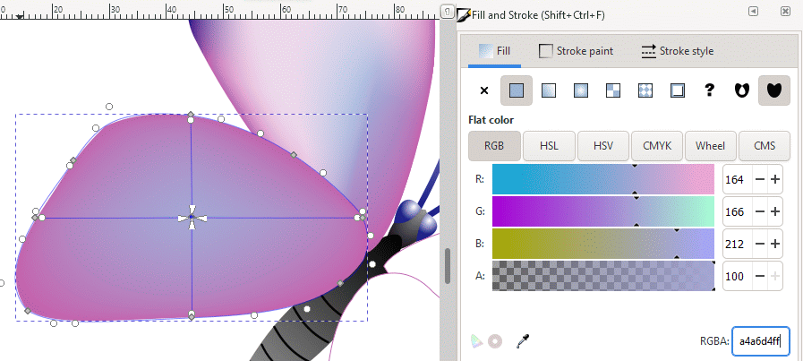
Selecting the central mesh point and giving it a color
highlight.
You will paint the wing tip deep purple. Group-select the two
farthest left mesh points on the wing tip with the Mesh tool cursor
(). The mesh points and handles change appropriately to show
they’re selected.
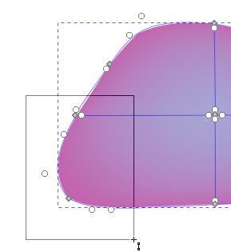
Group-selecting the two farthest left mesh
points.
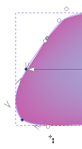
Selected mesh points and handles.
Type 14027cff into the RGBA text box. Press
<Enter> to set the color.
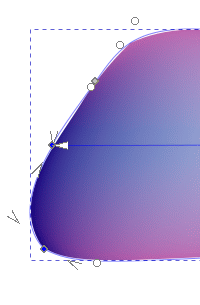
Tailwing 7.
Drag the left mesh handle of the central halfway out to the left
wing edge. Drag the right mesh handle halfway out to the right wing
edge.
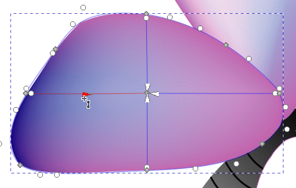
Moving the left mesh handle.
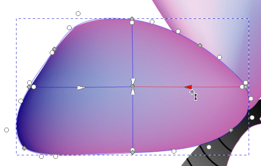
Moving the right mesh handle.
You will now give the central mesh point a swirl effect.
Drag the right mesh handle up so it makes an upward curve out
of the right line segment. Drag the left mesh handle down so it makes a
downward curve out of the left line segment.
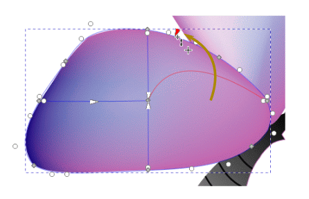
Dragging the right mesh handle up.
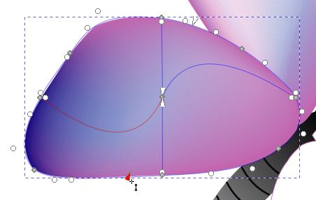
Dragging the left mesh handle down.
Click off the artwork to deselect the wing. Then, <Shift>-click
the forewing and tailwing to group-select them. Pres <Ctrl>-D to
duplicate them.
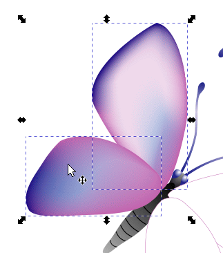
Group-selecting and duplicating the forewing and
tailwing.
Move the duplicate pair of wings to near the right side of the
butterfly and click on the Flip selected objects horizontally icon
() in the Tool Controls
Bar to make a mirror image of the pair of wings.
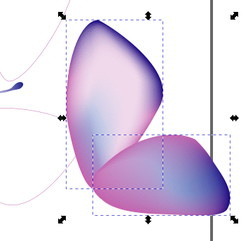
Making a mirror image of the pair of wings.
Move and rotate the grouped pair of wings into place. If the original
outline is still visible, select it with the Select tool ()
and press <Delete> to delete it.
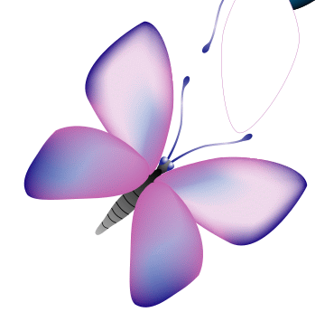
Finished tailwing.
Modifying Mesh Lines
You’ll use the Mesh tool to reshape mesh lines by moving mesh points
on the mesh in the forewing of the first butterfly.
Move the butterfly at the top of the artwork down to the center of
your work window.
Select the Create meshes tool (), and click the left forewing to bring up the gradient mesh.
Select the left mesh point on the top horizontal line (don’t release
the mouse button) and then drag the mesh point to the left.
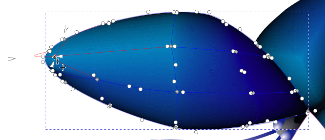
Dragging the mesh point to the left.
Notice how the mesh line left of the point arches out beyond the
edge of the wing. This happened because the left anchor point moved in
relation to the mesh point as you moved it.
To remedy this situation, drag the left mesh handle straight in so it
is situated immediately next to its mesh point. Note how the curvature of
the mesh line is reduced and disappears when the handle is right up against
its associated mesh point. Also note how the edging color returns to the
wing tip.
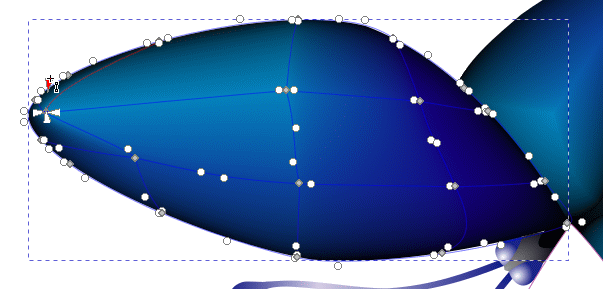
Dragging the left mesh handle to its mesh
point.
Now move the lower internal mesh point on the second line from the
right down, following the direction of the original mesh line. Note how the
purple color patch moves down with the point and overpowers the edging
color. The mesh line segment also curves outside the boundary of the
forewing.
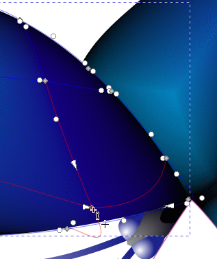
Moving the right lower mesh point down.
Bring back the dark edging color by moving the bottom mesh handle
straight up to touch its mesh point. The mesh line segment straightens
out.
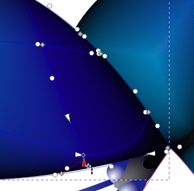
Moving the bottom mesh handle up.
You will now add a vertical mesh line to the grid. Position the
Mesh tool cursor () on the bottom edge of the forewing
midway between the right-hand and middle vertical mesh lines.
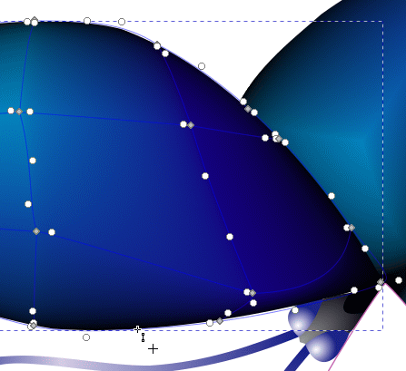
Positioning the Mesh tool cursor on the bottom edge
mesh line of the forewing between the right and middle vertical mesh
lines.
Double-click on the bottom edge mesh line. A new vertical mesh line
is created. Note that it loosely conforms to the overall geometry of the
forewing.
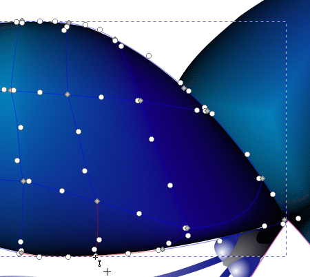
Adding a new vertical mesh line.
You will now change the color of the upper mesh point on the
mesh line you just added. Start by moving the left mesh handle of the
mesh point located on the same horizontal line right of the one on the new
line halfway to the left. Do the same with the lower mesh handle. Doing
this will help in extending the deep purple path of color on the right side
of the forewing.
Color the upper mesh point 14027cff.
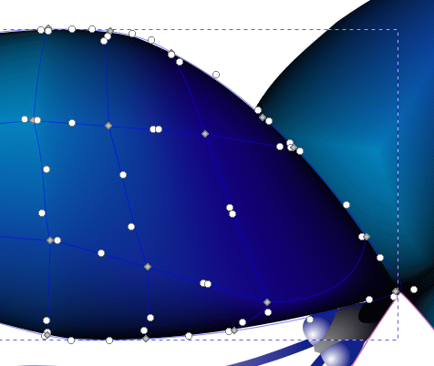
Moving mesh handles to halfway locations on mesh
lines.
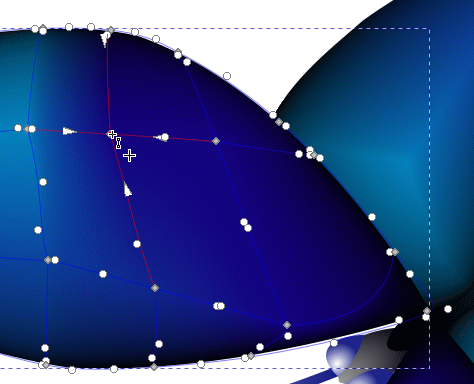
Coloring the mesh point.
Select the forewing with the Select tool ()
and press <Ctrl>-D to duplicate it. Move the duplicated forewing to
the right side of the butterfly.
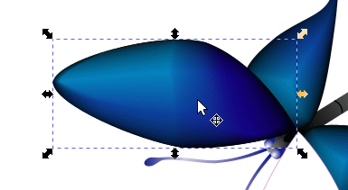
Marquee-selecting two inner mesh points.
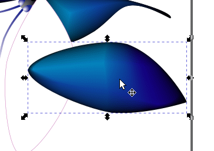
Two inner mesh points selected.
With the forewing still selected, click on the Flip selected
objects vertically icon () to make a mirror image of the
forewing.
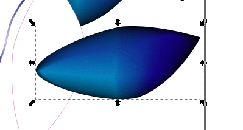
Flipping the forewing vertically to create a mirror
image.
Move and rotate the forewing until it fits exactly over the wing
outline.
Using Snap tools can make positioning easier. Activate
Enable snapping (%), Snap nodes, paths, and handles, and
Snap to cusp nodes, incl. rectangle corners.
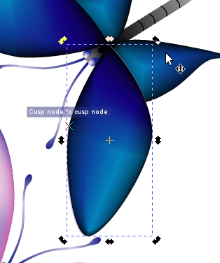
Moving and rotating the pair of wings into
position.
If the original wing outlines are still visible, select them with
the Select tool () and press <Delete> to delete
them.
Finished Artwork.
File > Save.
Review Questions
Describe two methods for creating a mesh.
How do you change the color on a mesh?
How do you add a mesh point to a mesh?
Describe how to move a mesh point without affecting the intersecting
line.
How do you create a warp effect?
Review Answers
To create a mesh grid, select the object that you want to attach the
grid to with the Select tool (). Then, select the Create and
edit meshes tool () in the toolbox. Set the
number of rows and columns that you want in the grid in the Mesh Tool
Controls Bar and select whether you want Coons smoothing or
bicubic smoothing. Choose Objects > Fill and Stroke…,
Fill tab, Mesh gradient ().
select the Create and edit meshes tool () in the toolbox. Set the number of rows and columns
that you want in the grid in the Mesh Tool Controls Bar and
select whether you want Coons smoothing or
bicubic smoothing. Double-click on the object you want to attach
a gradient mesh to.
To change a color on the mesh, use the Mesh tool to select
the mesh point for the color, and then select a different color.
To add a mesh point to a grid, double-click on a mesh line segment
with the Mesh tool cursor ().
To move a mesh point without affecting the intersecting line, use
the Mesh tool to select the point, and without releasing the mouse
button, drag the mesh point along the line that runs in the direction you
want.
To add a warp effect, drag at least one mesh handle in the direction
in which you want the warp. If necessary, drag the opposite mesh handle in
the opposite direction.


{kind=link}
{kind=link}
 ) in the toolbox, and click the
black right forewing on the top butterfly to select it.
) in the toolbox, and click the
black right forewing on the top butterfly to select it.

 ) in the Tool Controls
Bar to make a mirror image of the pair of wings.
) in the Tool Controls
Bar to make a mirror image of the pair of wings.